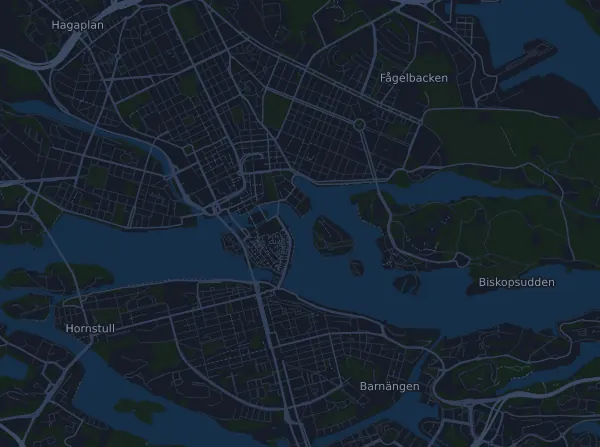

Stockholm Marathon 42 km
- Distance
- 41.9 km
- Elevation gain
- ↑ 164 m
- Highest point
- 36 m a.s.l.
- Surface
- Road
- Profile
- Flat
- Start
- 12:00
Elevation profile
Prepare with Mila
Mila is a running coach app. Add a race to your plan and the coach plans your weeks up to race day around your form, and gives you a finish-time forecast and a plan for pacing, drinks and fuel on the course.

The right run, on the right day.
The course

About the course
adidas Stockholm Marathon is a road race in Stockholm, Sweden, over 41.9 km. The course climbs 164 m and descends 164 m in total, 3.9 m per km, which makes it flat. The highest point is 36 m above sea level and the lowest 2 m.
The biggest climb starts at km 19.2: 25 m of ascent over 2.6 km at 0.9 % on average, up to 27 m.
In the Mila app, the coach describes the course in detail in your language and plans your pacing and fueling for it.
Climbs
| Starts at | Length | Gain | Gradient | Top (m above sea level) |
|---|---|---|---|---|
| km 19.2 | 2.6 km | 25 m | 0.9 % | 27 |
Before the start
Start times
- 12:00
Source: stockholmmarathon.se, retrieved 15 October 2026
Pace table
Stockholm Marathon 42 km in 3:00:00 – pace per km and splits
4:18 per km · km 10: 42:55 · km 21.1: 1:30:33 · km 30: 2:08:45 · km 40: 2:51:40 · finish: 3:00:00
Stockholm Marathon 42 km in 3:30:00 – pace per km and splits
5:00 per km · km 10: 50:04 · km 21.1: 1:45:39 · km 30: 2:30:13 · km 40: 3:20:17 · finish: 3:30:00
Stockholm Marathon 42 km in 4:00:00 – pace per km and splits
5:43 per km · km 10: 57:13 · km 21.1: 2:00:45 · km 30: 2:51:40 · km 40: 3:48:54 · finish: 4:00:00
Stockholm Marathon 42 km in 4:30:00 – pace per km and splits
6:26 per km · km 10: 1:04:23 · km 21.1: 2:15:50 · km 30: 3:13:08 · km 40: 4:17:31 · finish: 4:30:00
The times assume an even pace the whole way. This is plain arithmetic, not a forecast: on climbs, in crowds and at aid stations the pace varies.
Frequently asked questions
When is Stockholm Marathon 42 km?
Stockholm Marathon 42 km takes place on Saturday, 29 May 2027. Check the date and start time with the organizer.
What time does Stockholm Marathon 42 km start?
According to the organizer: 12:00.
How long is Stockholm Marathon 42 km and how much climbing is there?
The race is 41.9 km with 164 m of climbing and 164 m of descent. The highest point is 36 m above sea level.
What is the course of Stockholm Marathon 42 km like?
The course is flat, with 3.9 m of climbing per km on average. It has one climb of at least 25 m, at km 19.2: 25 m over 2.6 km. Start and finish are in the same place. The surface is road.
How should I pace Stockholm Marathon 42 km?
Aim for an even effort the whole way, and hold back in the first kilometres when your legs feel fresh and the field pulls away. The course is flat, so an even pace per kilometre works well. In Mila you get a pace plan for this course, based on your own form.
More races like this
More races nearby
- Umåker Trail 15,6 km29 May 2027 · Umeå (Röbäck/Umåker), Sweden
- Göteborgsvarvet 21 km22 May 2027 · Göteborg, Sweden
- COOP Kungsholmen Runt 10 km8 May 2027 · Stockholm (Rålambshovsparken, Kungsholmen), Sweden
- Premiärmilen 10 km3 April 2027 · Stockholm (Norra Djurgården), Sweden
- Fjällmaraton 100K29 July 2027 · Fångåmon–Ottsjö, Undersåker (Årefjällen), Sweden
- Kia Fjällmaraton 45K7 August 2027 · Fångåmon, Sweden
Prepare with Mila
The right run, on the right day.
Details come from the course file and the organizer's information. Check the date, start times and rules with the organizer.
Mila is not affiliated with, sponsored by or endorsed by the organizer or the race's sponsors. Names and trademarks belong to their owners. Organizer or rights holder? Ask for a change or a removal